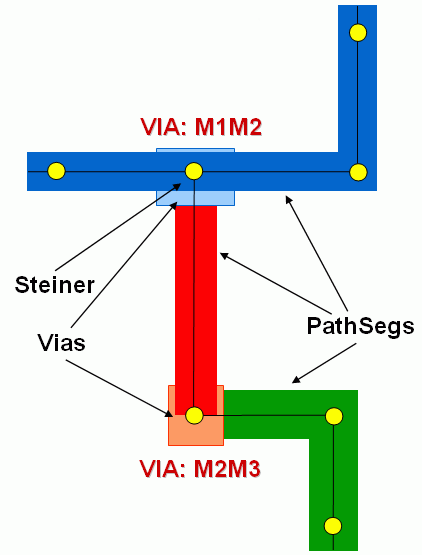

|
 |
 |
||||||
|
|
|
||||||
Routes represent the design geometry in terms of point-to-point physical interconnects on the same layer or spanning multiple layers. Individual routes cannot branch. In OpenAccess, routes are persistent objects generated from the oaRoute class. Routes represent the majority of symbolic or signal routing for a design.
Think of a route as a composite figure containing an ordered set of objects, which can include PathSegs, vias, and guides, all of which can span multiple layers. A route has two ends that you can logically connect to two qualified objects. A route object is derived from a connection figure (oaConnFig) and can potentially be part of a net. The route’s net applies to all its component objects.
Because nets branch, the net geometry is often composed of multiple routes. OpenAccess lets routing applications set and query the net branching topology when implementing physical routes using the routeTopology attribute on the physical route objects (oaPathSegs and oaVias). By putting the routeTopology attribute at the route object level, OpenAccess provides support for both symbolic and geometric routing because the route object might or might not be an oaRoute component. Typically, routing applications use steiners as branching points. An oaSteiner object is a connection object that be the begin or end connection object for a route, thus allowing several routes to fan in or fan out from that point.

In OpenAccess, geometric routes, such as those for power, ground or other custom nets, are implied by the application’s direct use of pathSegs, vias, guides, or other shapes that are not part of oaRoutes.
An application can use routes to work through phases of the routing process as follows:
Note: For more information about PathSegs, see Physical Routing Segments (Orthogonal or Diagonal).
Applications can specify a set of constraints (oaConstraintGroup) that the route geometry must satisfy. The application must ensure that the constraints are satisfied.
A route is created in a physical block with the oaRoute::create() method. At a minimum, applications must specify the block to which the route will belong. Applications can optionally specify:
Routes are always empty when created and need to be populated with a set of objects that comprise the route.
A design might satisfy a connection on a net by abutment, where no additional wire is needed because the pins to be connected overlap. In this case, the application should indicate that the connection is fully routed by creating an empty route. If there are abutted pins and additional routing on the net, there should be two empty routes (for the two abutted pins) that connect to a steiner. An additional non-empty route would also connect to that steiner.
Routes can be populated with the following objects:
However, the following restrictions apply. Objects added to routes
The oaRouteObjectArray utility class lets you assign a set of objects to an existing route or access the set of objects for an existing route.
An application can populate an oaRouteObjectArray with the set of objects to be assigned to a route, then use oaRoute::setObjects() to communicate the assignment to the route object. The same object should not be specified more than once in the oaRouteObjectArray. An exception is thrown if this criteria is not met, or if the object does not qualify to be a route object.
If an object being added already belongs to a route, it is first removed from that route and then added to the specified route. On successful assignment, all objects that became part of the route implicitly inherit the route's net and will return the route's net if queried. Applications can access the current set of objects that belong to a route with the oaRoute::getObjects() method, which populates the specified oaRouteObjectArray object.
A application can remove all the objects in a route with oaRoute::unsetObjects(). This operation disassociates the route from its objects, but both the route and the objects still exist. All the disassociated objects acquire the route's net and explicitly belong to it. An application can optionally destroy all the route objects with oaRoute::destroyObjects(). Note that the route itself continues to exist while its objects are removed from the database.
To remove objects selectively from a route, an application can do the following:
You can associate a route with two end connection objects representing the beginning and end of the route. The begin connection object refers to the first object that is part of the route, and the end connection object refers to the last object that is part of the route.
The following objects can be used as end connection objects for routes:
However, the following restrictions apply. Connection objects
The application must ensure that the begin connection object or its physical implementation does (or will eventually) connect to the first object in the route, and that the end connection object or its physical implementation does (or will eventually) connect to the last object in the route.
You can use oaRoute::setBeginConn() to specify the begin connection object for a route, and oaRoute::setEndConn() to specify the end connection object. If an application specifies a begin or end connection object for a route that already has that begin or end connection object, the existing connection object association with the route is removed, and an association with the specified object is established.
A qualifying connection object can have multiple routes terminating at or originating from it. The getConnRoutes() methods on each of the qualifying connection object classes (oaShape, oaVia, oaPin, oaTerm, oaInstTerm, and oaSteiner) return the collection of routes that either begin or end on a particular connection object.
You can access route connection objects from a route with oaRoute::getBeginConn() and oaRoute::getEndConn(). You can remove route connection objects with oaRoute::unsetBeginConn() and oaRoute::unsetEndConn().
The oaRoute class provides additional methods that let you specify and access other useful information for route objects.
Return to Programmers Guide topics

Copyright © 2001-2010 Cadence Design Systems, Inc.
All rights reserved.